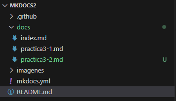

Practica-IAW-3.1- Implantación de Moodle en Amazon Web Services (AWS) mediante Ansible
En esta práctica vamos a realizar la implantación de la aplicación web Moodle en dos instancias EC2 de Amazon Web Services (AWS) haciendo uso de playbooks de Ansible. En una de las instancias deberá instalar Apache HTTP Server y los módulos necesarios de PHP y en la otra máquina deberá instalar MySQL Server.
Implantación de Moodle en Amazon Web Services (AWS) mediante Ansible
Pasos a seguir antes de todo:
Tener la siguiente estructura de directorios y archivos dentro de la instancia del nodo control, ya que todo lo que vamos a hacer va a ser desde el nodo control:

La arquitectura de esta aplicación estará formada por dos capas:
Una capa de front-end, formada por un servidor web con Apache HTTP Server.
Una capa de back-end, formada por un servidor MySQL.
Ahora vamos al archivo de inventory, donde en inventory tenemos que poner las ip pública del frontend y el backend y el grupo.
[frontend]
44.199.2.175
[backend]
34.233.73.87
[all:vars]
ansible_user=ubuntu
ansible_ssh_private_key_file=/home/ubuntu/practica-iaw-3.1/vockey.pem
ansible_ssh_common_args='-o StrictHostKeyChecking=accept-new'
1. paso: Creamos el nombre de dominio desde no-ip, poniendo la ip del frontend

2. paso: Dentro de la instancia nodo control, tener metida la vockey.pem y darle permisos chmod 400 y descargar ansible
apt install ansible -y
3. paso: vamos a utilizar las siguientes variables:
frontend_private_ip: 172.31.41.12
db:
name: moodle_db
user: juanje
password: Eliker123
moodle:
directory: /var/www/html/moodle
db_name: moodle_db
db_user: usuario_moodle
db_password: Eliker123
type: mysqli
db_host: 172.31.34.212
ip_cliente_mysql: 172.31.%
domain: practica-iaw.zapto.org
data_directory: /var/www/moodledata
certbot:
le_email: juan@email.es
le_domain: practica-iaw.zapto.org
4. paso: crear el archivo install_lamp_frontend.yml
---
- name: Configurar Moodle Frontend
hosts: frontend
become: yes
tasks:
- name: Actualizar los repositorios
apt:
update_cache: yes
- name: Instalar el servidor web Apache
apt:
name: apache2
state: present
- name: Instalar PHP y los módulos necesarios
apt:
name:
- php
- php-mysql
- libapache2-mod-php
- php-bcmath
- php-curl
- php-gd
- php-imagick
- php-intl
- php-memcached
- php-mbstring
- php-dom
- php-zip
- php-cli
- php-xml
- php-soap
state: present
- name: Modificamos el valor max_input_vars de PHP
replace:
path: /etc/php/8.3/apache2/php.ini
regexp: ;max_input_vars = 1000
replace: max_input_vars = 5000
- name: Modificamos el valor de memory_limit de PHP
replace:
path: /etc/php/8.3/apache2/php.ini
regexp: memory_limit = 128M
replace: memory_limit = 256M
- name: Modificamos el valor de post_max_size de PHP
replace:
path: /etc/php/8.3/apache2/php.ini
regexp: post_max_size = 8M
replace: post_max_size = 128M
- name: Modificamos el valor de upload_max_filesize de PHP
replace:
path: /etc/php/8.3/apache2/php.ini
regexp: upload_max_filesize = 2M
replace: upload_max_filesize = 128M
- name: Copiar el archivo de configuración de Apache
copy:
src: ../templates/000-default.conf
dest: /etc/apache2/sites-available/
mode: 0755
- name: Crear directorio /var/www/html/moodle
file:
path: /var/www/html/moodle
state: directory
owner: www-data
group: www-data
mode: '0755'
- name: Crear directorio /var/www/moodledata
file:
path: /var/www/moodledata
state: directory
owner: www-data
group: www-data
mode: '0755'
- name: Habilitar el módulo rewrite de Apache
command: a2enmod rewrite
changed_when: false
- name: Reiniciar el servidor web Apache
service:
name: apache2
state: restarted
5. paso: crear el archivo install_lamp_backend.yml
---
- name: Playbook para instalar la pila LAMP en el Backend
hosts: backend
become: yes
vars_files:
- ../vars/variables.yml
tasks:
- name: Actualizar los repositorios
apt:
update_cache: yes
- name: Instalar el sistema gestor de bases de datos MySQL
apt:
name: mysql-server
state: present
- name: Instalamos el módulo de pymysql
apt:
name: python3-pymysql
state: present
- name: Crear la base de datos para moodle
mysql_db:
name: "{{ moodle.db_name }}"
encoding: utf8mb4
collation: utf8mb4_unicode_ci
state: present
login_unix_socket: /var/run/mysqld/mysqld.sock
- name: Borra el usuario si existe
mysql_user:
name: "{{ moodle.db_user }}"
host: "{{ moodle.ip_cliente_mysql }}"
state: absent
login_unix_socket: /var/run/mysqld/mysqld.sock
- name: Crear el usuario para la base de datos de moodle
mysql_user:
name: "{{ moodle.db_user }}"
host: "{{ moodle.ip_cliente_mysql }}"
password: "{{ moodle.db_password }}"
priv: "{{ moodle.db_name }}.*:ALL"
state: present
login_unix_socket: /var/run/mysqld/mysqld.sock
- name: Reiniciamos privilegios del usuario
mysql_db:
name: "{{ moodle.db_name }}"
state: present
login_unix_socket: /var/run/mysqld/mysqld.sock
- name: Reiniciamos el servicio de base de datos
service:
name: mysql
state: restarted
6. paso: crear el archivo setup_letsencrypt_https.yml
---
- name: Configurar Certbot y solicitar certificado SSL
hosts: frontend
become: yes
vars_files:
- ../vars/variables.yml
tasks:
# Instalar snapd si no está presente
- name: Instalar snapd si no está presente
apt:
name: snapd
state: present
# Instalar el paquete base de snap si no está
- name: Instalar core de snap si no está presente
snap:
name: core
state: present
# Eliminar instalaciones anteriores de certbot con apt
- name: Eliminar Certbot instalado con apt (si existe)
apt:
name: certbot
state: absent
# Instalar Certbot con snap
- name: Instalar Certbot usando snap
snap:
name: certbot
state: present
# Verificar las variables certbot
- name: Verificar las variables certbot
debug:
msg: "Email: {{ certbot.le_email }}, Domain: {{ certbot.le_domain }}"
# Solicitar un certificado SSL para el dominio con Certbot
- name: Solicitar certificado SSL para el dominio con Certbot
command: >
certbot --apache
-m "{{ certbot.le_email }}"
--agree-tos
--no-eff-email
-d "{{ certbot.le_domain }}"
--non-interactive
7. paso: crear el archivo deploy.yml
- name: Deploy Moodle
hosts: frontend
become: yes
vars_files:
- ../vars/variables.yml
- name: Descargar el código fuente de moodle
get_url:
url: https://github.com/moodle/moodle/archive/refs/tags/v4.3.1.zip
dest: /tmp
mode: 0755
- name: Instalar unzip
apt:
name: unzip
state: present
- name: Descomprimir el paquete de moodle
unarchive:
src: /tmp/moodle-4.3.1.zip
dest: /tmp
remote_src: yes
- name: Eliminar el directorio de instalación
file:
path: /var/www/html/
state: absent
- name: Crear el directorio de instalación
file:
path: /var/www/html
state: directory
owner: www-data
group: www-data
mode: 0755
- name: Copiar contenido de moodle-4.3.1 a /var/www/html
copy:
src: /tmp/moodle-4.3.1/
dest: /var/www/html
remote_src: true
force: yes
- name: Modificar los permisos del directorio /var/www/html
file:
path: /var/www/html
owner: www-data
group: www-data
recurse: yes
mode: 0755
- name: Modificar los permisos del directorio /var/moodledata
file:
path: /var/moodledata
owner: www-data
group: www-data
recurse: yes
mode: 0755
- name: Instalar moodle desde PHP CLI
command:
sudo -u www-data php /var/www/html/admin/cli/install.php \
--wwwroot={{ moodle.www_root }} \
--dataroot={{ moodle.data_root }} \
--dbtype={{ moodle.type }} \
--dbhost={{ moodle.host }} \
--dbname={{ db.name }} \
--dbuser={{ db.user }} \
--dbpass={{ db.password }} \
--fullname="{{ moodle.fullname }}" \
--shortname="{{ moodle.shortname }}" \
--summary="{{ moodle.summary }}" \
--adminuser={{ moodle.admin_user }} \
--adminpass={{ moodle.admin_pass }} \
--adminemail={{ moodle.admin_email }} \
--non-interactive \
--agree-license
args:
chdir: /var/www/html
- name: Configurar cron para Moodle
become: yes
ansible.builtin.cron:
name: "Moodle Cron Job"
minute: "*"
job: "/usr/bin/php /var/www/html/admin/cli/cron.php >/dev/null 2>&1"
state: present
- name: Reiniciar servicio cron
become: yes
ansible.builtin.service:
name: cron
state: restarted
enabled: yes
8. paso: según el orden hayamos creado los archivos, se ejecutan, primero se ejecuta el frontend, backend, letsencrypt y por ultimo deploy
sudo ansible-playbook -i ./inventory/inventory main.yml
comprobación ejecucion del main.yml donde se encuentran todos los archivos

9. paso: comprobación del funcionamiento correcto de moodle